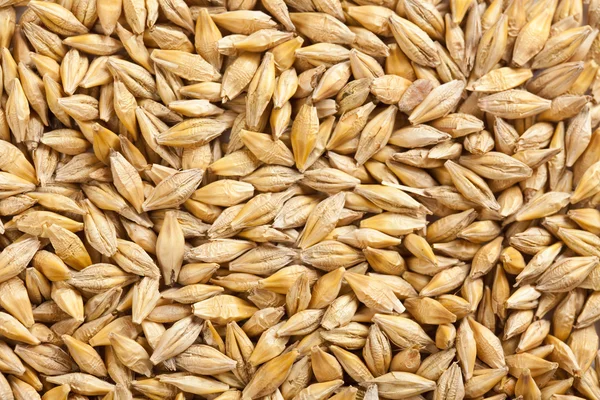
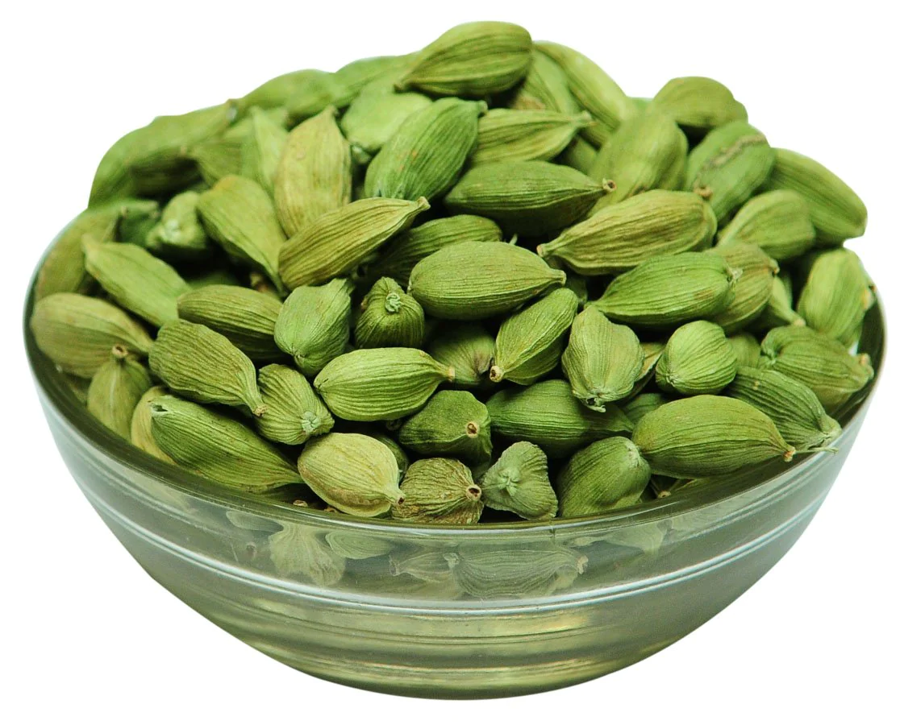
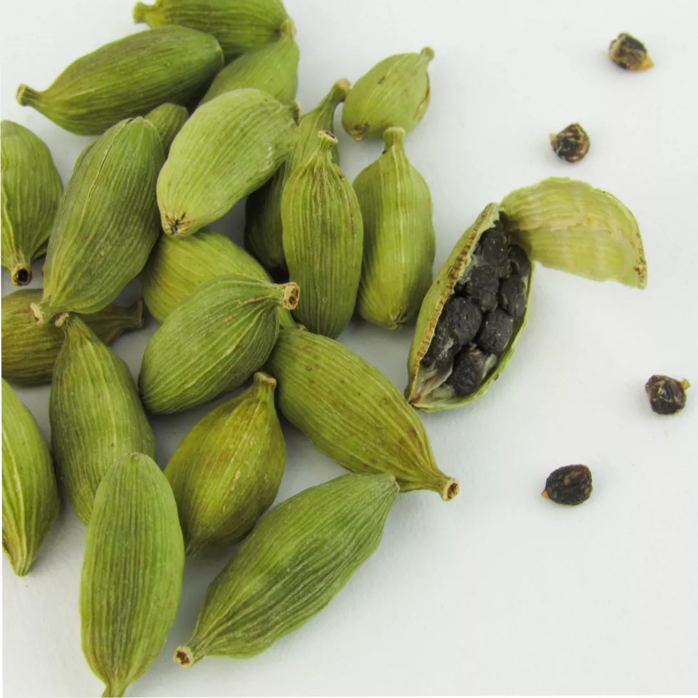
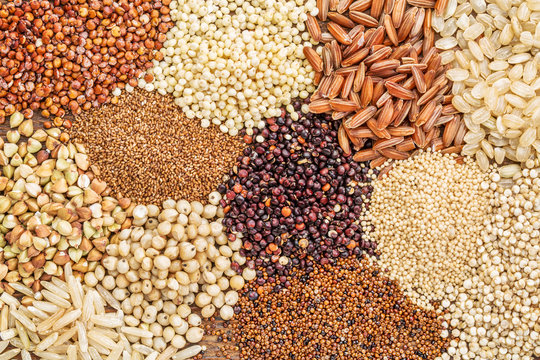
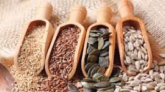
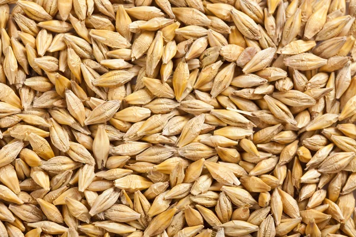
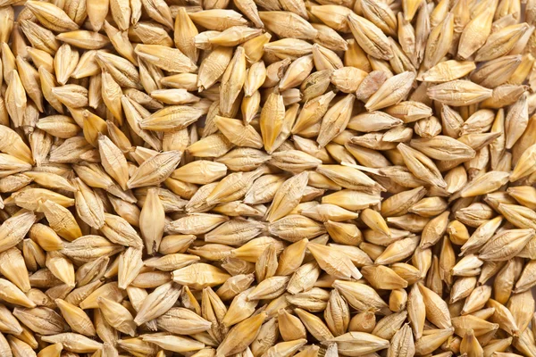
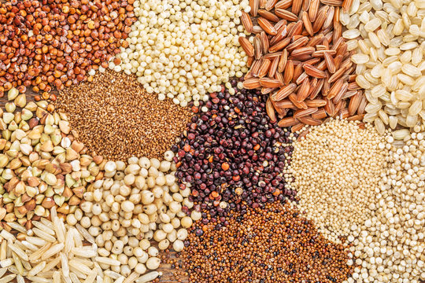
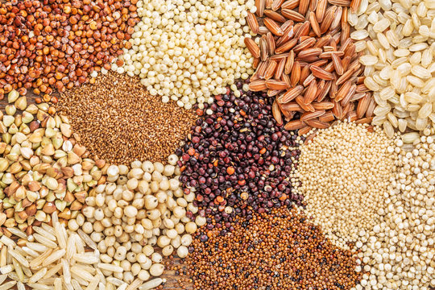

Choose a suitable field with well-drained soil. Rice requires a lot of water, so the field
should be
able to
retain water without becoming waterlogged.
Plow the field to break up the soil and create a fine seedbed.
Level the field to ensure uniform water distribution during cultivation.
Seedbed Preparation:
Prepare a seedbed either on the same field or a separate location. This is where the rice seeds
will be
sown and
germinated before transplanting.
Sow the rice seeds in rows, ensuring proper spacing.
Seed Germination:
Keep the seedbed adequately watered to facilitate germination.
Monitor the seedlings for pests and diseases, and take appropriate measures if necessary.
Nursery Maintenance:
Once the rice seedlings have reached a suitable height (usually a few inches), they are ready
for
transplanting.
Maintain the nursery by providing sufficient water and protecting the seedlings from pests.
Transplanting:
Transplant the seedlings from the nursery to the main field. This is typically done when the
seedlings
have 3-4
leaves.
Ensure proper spacing between the transplanted seedlings to allow for healthy growth.
Water Management:
Rice requires a lot of water for optimal growth. Maintain a consistent water level in the field,
especially
during the growing season.
In some cases, farmers use traditional flood irrigation methods, while others may use more modern
techniques
such as drip or sprinkler irrigation.
Fertilization:
Apply fertilizers based on soil testing and the specific nutrient requirements of rice. Common
fertilizers
include nitrogen, phosphorus, and potassium.
Harvesting:
Harvesting is typically done when the rice grains have matured and turned golden brown.
Use sickles or combine harvesters for large-scale operations.
Drying and Threshing:
Dry the harvested rice in the sun or using mechanical dryers.
Once dried, thresh the rice to separate the grains from the straw.
Milling and Storage:
Mill the rice to remove the outer husk, bran, and germ.
Store the processed rice in a cool, dry place.
हिंदी
भूमि की तैयारी:
अच्छी जल निकास वाली मिट्टी वाला उपयुक्त खेत चुनें। चावल के लिए बहुत अधिक पानी की आवश्यकता
होती है,
इसलिए खेत
को जलभराव के बिना पानी बनाए रखने में सक्षम होना चाहिए।
मिट्टी को तोड़ने और बढ़िया बीजभूमि बनाने के लिए खेत की जुताई करें।
खेती के दौरान समान जल वितरण सुनिश्चित करने के लिए खेत को समतल करें।
बीज तैयार करना:
उ
सी खेत में या अलग स्थान पर बीज क्यारी तैयार करें। यहीं पर चावल के बीज बोए जाएंगे और रोपाई
से पहले
अंकुरित किए
जाएंगे।
उचित दूरी सुनिश्चित करते हुए, चावल के बीज पंक्तियों में बोएं।
बीज अंकुरण:
अंकुरण को सुविधाजनक बनाने के लिए बीज क्यारी को पर्याप्त पानी देते रहें।
कीटों और बीमारियों के लिए पौध की निगरानी करें और यदि आवश्यक हो तो उचित उपाय करें।
नर्सरी रखरखाव:
एक बार जब चावल के पौधे उपयुक्त ऊंचाई (आमतौर पर कुछ इंच) तक पहुंच जाते हैं, तो वे रोपाई के
लिए तैयार हो
जाते
हैं।
पर्याप्त पानी उपलब्ध कराकर और पौधों को कीटों से बचाकर नर्सरी का रखरखाव करें।
प्रत्यारोपण:
पौध को नर्सरी से मुख्य खेत में रोपें। यह आमतौर पर तब किया जाता है जब पौधों में 3-4 पत्तियाँ
हों।
स्वस्थ विकास के लिए प्रत्यारोपित पौधों के बीच उचित दूरी सुनिश्चित करें।
जल प्रबंधन:
चावल के सर्वोत्तम विकास के लिए बहुत अधिक पानी की आवश्यकता होती है। खेत में लगातार जल स्तर
बनाए रखें,
खासकर
बढ़ते मौसम के दौरान।
कुछ मामलों में, किसान पारंपरिक बाढ़ सिंचाई विधियों का उपयोग करते हैं, जबकि अन्य अधिक आधुनिक तकनीकों
जैसे ड्रिप
या स्प्रिंकलर सिंचाई का उपयोग कर सकते हैं।
निषेचन:
मिट्टी परीक्षण और चावल की विशिष्ट पोषक तत्वों की आवश्यकताओं के आधार पर उर्वरकों का प्रयोग
करें।
सामान्य
उर्वरकों में नाइट्रोजन, फास्फोरस और पोटेशियम शामिल हैं।
खरपतवार नियंत्रण:
चावल के खेत को खरपतवारों से मुक्त रखें, क्योंकि वे पोषक तत्वों और सूरज की रोशनी के लिए चावल
के पौधों
से
प्रतिस्पर्धा कर सकते हैं।
खरपतवार नियंत्रण के लिए हाथ से निराई-गुड़ाई या शाकनाशी का उपयोग किया जा सकता है।
कीट एवं रोग प्रबंधन:
कीटों और बीमारियों के लिए फसल की नियमित निगरानी करें।
आवश्यकतानुसार कीटनाशक या अन्य नियंत्रण उपाय लागू करें।
कटाई:
कटाई आमतौर पर तब की जाती है जब चावल के दाने परिपक्व हो जाएं और सुनहरे भूरे रंग के हो जाएं।
बड़े पैमाने पर कार्यों के लिए दरांती या कंबाइन हार्वेस्टर का उपयोग करें।
सुखाना और गहाई करना:
कटे हुए चावल को धूप में या यांत्रिक ड्रायर का उपयोग करके सुखाएं।
एक बार सूख जाने पर, चावल को भूसे से अनाज को अलग करने के लिए पीस लें।
मिलिंग और भंडारण:
बाहरी भूसी, चोकर और रोगाणु को हटाने के लिए चावल को पीस लें।
प्रसंस्कृत चावल को ठंडी, सूखी जगह पर रखें।
सुनना
2. BARLEY / 2. जौ

ENGLISH
Selecting the Right Variety: Choose a barley variety suitable for the local climate and altitude.
Varieties like UPB-100, RD-2035, and RD-2668 are commonly grown in Uttarakhand.
Preparation of Land: Prepare the land by plowing and harrowing to create a fine seedbed. Barley thrives
in well-drained soils, so ensure proper drainage.
Seed Selection and Treatment: Use high-quality seeds from a reliable source. Treat the seeds with
fungicides or bioagents to protect against seed-borne diseases.
Sowing: Sow the barley seeds at the beginning of the Rabi season, typically from late October to
November. The ideal sowing depth is around 3-5 cm.
Spacing and Fertilization: Maintain proper spacing between rows and plants to allow for adequate growth.
Apply fertilizers based on soil test recommendations to ensure optimal nutrient levels.
Irrigation: Provide timely irrigation, especially during the germination and tillering stages. Barley
requires moderate water, so avoid waterlogging and ensure proper drainage.
Weed Management: Keep the field weed-free through regular weeding or use herbicides as per recommended
dosages. Early weed control is crucial to prevent competition for nutrients and water.
Disease and Pest Control: Monitor the crop regularly for signs of diseases and pests such as barley
yellow dwarf virus, powdery mildew, and aphids. Apply appropriate pesticides or biocontrol agents if
necessary.
Crop Monitoring: Monitor the crop's growth and development regularly. Look out for any signs of nutrient
deficiencies, water stress, or pest infestations and take corrective measures promptly.
Harvesting: Harvest the barley crop when the grains have matured and the moisture content is around
12-14%. Use a combine harvester or traditional methods like sickle harvesting, depending on the scale of
cultivation.
Post-Harvest Handling: Thresh the harvested barley to separate the grains from the straw. Dry the grains
to reduce moisture content and store them in suitable conditions to maintain quality.
हिंदी
सही किस्म का चयन: स्थानीय जलवायु और ऊंचाई के लिए उपयुक्त जौ की किस्म चुनें। यूपीबी-100, आरडी-2035 और
आरडी-2668 जैसी किस्में आमतौर पर उत्तराखंड में उगाई जाती हैं।
भूमि की तैयारी: अच्छी बीज क्यारी बनाने के लिए जुताई और हैरो चलाकर भूमि तैयार करें। जौ अच्छी जल
निकासी वाली मिट्टी में पनपती है, इसलिए उचित जल निकासी सुनिश्चित करें।
बीज चयन और उपचार: किसी विश्वसनीय स्रोत से प्राप्त उच्च गुणवत्ता वाले बीजों का उपयोग करें। बीज जनित
रोगों से बचाव के लिए बीजों को फफूंदनाशी या बायोएजेंट से उपचारित करें।
बुआई: रबी मौसम की शुरुआत में, आमतौर पर अक्टूबर के अंत से नवंबर तक, जौ के बीज बोएं। आदर्श बुआई की
गहराई लगभग 3-5 सेमी है।
अंतर और उर्वरक: पर्याप्त विकास के लिए पंक्तियों और पौधों के बीच उचित अंतर बनाए रखें। इष्टतम पोषक
तत्व स्तर सुनिश्चित करने के लिए मिट्टी परीक्षण की सिफारिशों के आधार पर उर्वरकों का प्रयोग करें।
सिंचाई: समय पर सिंचाई प्रदान करें, विशेषकर अंकुरण और कल्ले फूटने के चरण के दौरान। जौ को मध्यम पानी
की आवश्यकता होती है, इसलिए जलभराव से बचें और उचित जल निकासी सुनिश्चित करें।
खरपतवार प्रबंधन: नियमित निराई-गुड़ाई करके खेत को खरपतवार मुक्त रखें या अनुशंसित खुराक के अनुसार
शाकनाशी का उपयोग करें। पोषक तत्वों और पानी के लिए प्रतिस्पर्धा को रोकने के लिए प्रारंभिक खरपतवार
नियंत्रण महत्वपूर्ण है।
रोग और कीट नियंत्रण: जौ पीला बौना वायरस, ख़स्ता फफूंदी और एफिड्स जैसे रोगों और कीटों के लक्षणों के
लिए फसल की नियमित रूप से निगरानी करें। यदि आवश्यक हो तो उचित कीटनाशक या जैव नियंत्रण एजेंट लागू
करें।
फसल की निगरानी: फसल की वृद्धि और विकास की नियमित रूप से निगरानी करें। पोषक तत्वों की कमी, पानी की
कमी या कीट संक्रमण के किसी भी लक्षण पर ध्यान दें और तुरंत सुधारात्मक उपाय करें।
कटाई: जौ की फसल की कटाई तब करें जब दाने परिपक्व हो जाएं और नमी की मात्रा लगभग 12-14% हो। खेती के
पैमाने के आधार पर कंबाइन हार्वेस्टर या हंसिया कटाई जैसे पारंपरिक तरीकों का उपयोग करें।
कटाई के बाद की संभाल: अनाज को भूसे से अलग करने के लिए कटी हुई जौ को पीस लें। नमी की मात्रा कम करने
के लिए अनाज को सुखाएं और गुणवत्ता बनाए रखने के लिए उन्हें उपयुक्त परिस्थितियों में संग्रहित करें।
सुनना
3. WHEAT / 3. गेहूँ
ENGLISH
Variety Selection: Choose a wheat variety suitable for the local climate and soil conditions. Common
varieties grown in Uttarakhand include HD-2967, PBW-550, and HD-2851.
Land Preparation: Prepare the land by plowing and harrowing to create a fine seedbed. Wheat grows best
in well-drained loamy soils, so ensure proper soil tilth and drainage.
Seed Selection and Treatment: Select high-quality seeds from a reputable source. Treat the seeds with
fungicides to protect against seed-borne diseases and enhance germination.
Sowing: Sow the wheat seeds at the onset of the Rabi season, typically from late October to December,
depending on the altitude. The ideal sowing depth is around 3-5 cm.
Spacing and Fertilization: Maintain proper spacing between rows and plants to optimize plant growth and
grain yield. Apply fertilizers based on soil test results to meet the crop's nutrient requirements.
Irrigation: Provide adequate irrigation during critical growth stages, especially during tillering and
flowering. Monitor soil moisture levels regularly and avoid water stress, particularly in rain-fed
areas.
Weed Management: Keep the wheat field free from weeds through timely weeding or use of herbicides. Early
weed control is essential to prevent competition for nutrients and water.
Disease and Pest Control: Monitor the crop regularly for signs of diseases such as rusts, powdery
mildew, and pests like aphids and wheat stem sawflies. Apply fungicides and insecticides as needed to
control pests and diseases.
Crop Monitoring: Monitor the wheat crop's growth and development throughout the growing season. Look for
any signs of nutrient deficiencies, lodging, or other issues and take appropriate action.
Harvesting: Harvest the wheat crop when the grains have fully matured and the moisture content is around
12-14%. Use a combine harvester or traditional methods like sickle harvesting, depending on farm size
and equipment availability.
Post-Harvest Handling: Thresh the harvested wheat to separate the grains from the straw. Dry the grains
to reduce moisture content and store them properly to maintain quality and prevent spoilage.
हिंदी
किस्म का चयन: स्थानीय जलवायु और मिट्टी की स्थिति के लिए उपयुक्त गेहूं की किस्म चुनें। उत्तराखंड में
उगाई जाने वाली सामान्य किस्मों में HD-2967, PBW-550, और HD-2851 शामिल हैं।
भूमि की तैयारी: अच्छी बीज क्यारी बनाने के लिए जुताई और हैरो चलाकर भूमि तैयार करें। गेहूं अच्छे जल
निकास वाली दोमट मिट्टी में सबसे अच्छा उगता है, इसलिए मिट्टी की उचित जुताई और जल निकासी सुनिश्चित
करें।
बीज का चयन और उपचार: किसी प्रतिष्ठित स्रोत से उच्च गुणवत्ता वाले बीज का चयन करें। बीज जनित रोगों से
बचाने और अंकुरण बढ़ाने के लिए बीजों को फफूंदनाशकों से उपचारित करें।
बुआई: रबी मौसम की शुरुआत में, ऊंचाई के आधार पर, आमतौर पर अक्टूबर के अंत से दिसंबर तक गेहूं के बीज
बोएं। आदर्श बुआई की गहराई लगभग 3-5 सेमी है।
अंतर और उर्वरक: पौधों की वृद्धि और अनाज की उपज को अनुकूलित करने के लिए पंक्तियों और पौधों के बीच
उचित अंतर बनाए रखें। फसल की पोषक तत्वों की आवश्यकताओं को पूरा करने के लिए मिट्टी परीक्षण के परिणामों
के आधार पर उर्वरकों का प्रयोग करें।
सिंचाई: महत्वपूर्ण विकास चरणों के दौरान, विशेष रूप से कल्ले निकलने और फूल आने के दौरान, पर्याप्त
सिंचाई प्रदान करें। मिट्टी की नमी के स्तर की नियमित रूप से निगरानी करें और पानी के तनाव से बचें,
खासकर वर्षा आधारित क्षेत्रों में।
खरपतवार प्रबंधन: समय पर निराई-गुड़ाई या शाकनाशी के प्रयोग से गेहूं के खेत को खरपतवार से मुक्त रखें।
पोषक तत्वों और पानी के लिए प्रतिस्पर्धा को रोकने के लिए प्रारंभिक खरपतवार नियंत्रण आवश्यक है।
रोग और कीट नियंत्रण: जंग, ख़स्ता फफूंदी और एफिड्स और गेहूं के तने की मक्खी जैसे कीटों के लक्षणों के
लिए फसल की नियमित रूप से निगरानी करें। कीटों और बीमारियों को नियंत्रित करने के लिए आवश्यकतानुसार
कवकनाशी और कीटनाशकों का प्रयोग करें।
फसल की निगरानी: बढ़ते मौसम के दौरान गेहूं की फसल की वृद्धि और विकास की निगरानी करें। पोषक तत्वों की
कमी, आवास या अन्य समस्याओं के किसी भी लक्षण को देखें और उचित कार्रवाई करें।
कटाई: गेहूं की फसल की कटाई तब करें जब दाने पूरी तरह से पक जाएं और नमी की मात्रा लगभग 12-14% हो। खेत
के आकार और उपकरण की उपलब्धता के आधार पर कंबाइन हार्वेस्टर या हंसिया कटाई जैसे पारंपरिक तरीकों का
उपयोग करें।
कटाई के बाद की संभाल: अनाज को भूसे से अलग करने के लिए कटे हुए गेहूं की गहाई करें। नमी की मात्रा कम
करने के लिए अनाजों को सुखाएं और गुणवत्ता बनाए रखने और खराब होने से बचाने के लिए उन्हें उचित तरीके से
संग्रहित करें।
सुनना
4. SUGARCANE / 4.गन्ने
ENGLISH
Land Preparation:
Choose well-drained and fertile soil for sugarcane cultivation.
Plough the land and prepare a fine seedbed.
Incorporate organic manure or fertilizers to enhance soil fertility.
Planting:
Sugarcane is typically propagated through stem cuttings known as setts.
Setts are planted in furrows or pits at the recommended spacing.
Spacing:
Maintain proper spacing between rows and setts to allow for healthy growth and easy cultivation.
Fertilization:
Apply fertilizers based on soil nutrient analysis to promote healthy cane growth.
Fertilizers are usually applied in split doses during the growing season.
Irrigation:
Sugarcane requires regular and consistent irrigation, especially during dry periods.
Proper water management is crucial for high sugar content in the cane.
Weed Control:
Control weeds through manual or mechanical methods to reduce competition for nutrients.
Earthing Up:
Earthing up involves covering the base of the sugarcane plants with soil to provide stability and
support.
Pest and Disease Control:
Implement measures to control pests and diseases affecting sugarcane, such as the sugarcane borer and
various fungal infections.
Harvesting:
Sugarcane is ready for harvesting about 10-18 months after planting, depending on the variety and
climatic conditions.
Harvesting is usually done manually using machetes or mechanical harvesters.
Transport to Sugar Mill:
Transport the harvested sugarcane to the sugar mill for processing.
Larger plantations may have their own milling facilities.
Processing:
At the sugar mill, sugarcane undergoes crushing to extract juice.
The juice is then processed to separate sugar crystals from the liquid.
Boiling and Refining:
The extracted sugar juice undergoes boiling and refining processes to produce raw sugar.
Packaging and Distribution:
The refined sugar is packaged into various forms (granulated, powdered, etc.) and distributed to
markets.
हिंदी
भूमि की तैयारी:
गन्ने की खेती के लिए अच्छी जल निकासी वाली और उपजाऊ मिट्टी चुनें।
भूमि की जुताई करें और अच्छी क्यारी तैयार करें।
मिट्टी की उर्वरता बढ़ाने के लिए जैविक खाद या उर्वरकों को शामिल करें।
रोपण:
गन्ने का प्रचार आमतौर पर तने की कलमों के माध्यम से किया जाता है जिन्हें सेट्स कहा जाता है।
सेट्स को अनुशंसित दूरी पर नाली या गड्ढों में लगाया जाता है।
रिक्ति:
स्वस्थ विकास और आसान खेती के लिए पंक्तियों और समूहों के बीच उचित दूरी बनाए रखें।
निषेचन:
गन्ने की स्वस्थ वृद्धि को बढ़ावा देने के लिए मिट्टी के पोषक तत्व विश्लेषण के आधार पर उर्वरकों का
प्रयोग करें।
बढ़ते मौसम के दौरान उर्वरकों को आमतौर पर विभाजित खुराकों में लगाया जाता है।
सिंचाई:
गन्ने को नियमित और निरंतर सिंचाई की आवश्यकता होती है, विशेषकर शुष्क अवधि के दौरान।
गन्ने में उच्च चीनी सामग्री के लिए उचित जल प्रबंधन महत्वपूर्ण है।
खरपतवार नियंत्रण:
पोषक तत्वों के लिए प्रतिस्पर्धा को कम करने के लिए मैन्युअल या यांत्रिक तरीकों से खरपतवारों को
नियंत्रित करें।
मिट्टी भरना:
मिट्टी लगाने में स्थिरता और समर्थन प्रदान करने के लिए गन्ने के पौधों के आधार को मिट्टी से ढंकना
शामिल है।
कीट एवं रोग नियंत्रण:
गन्ने को प्रभावित करने वाले कीटों और बीमारियों, जैसे गन्ना छेदक और विभिन्न कवक संक्रमणों को
नियंत्रित करने के उपाय लागू करें।
कटाई:
किस्म और जलवायु परिस्थितियों के आधार पर, गन्ना रोपण के लगभग 10-18 महीने बाद कटाई के लिए तैयार हो
जाता है।
कटाई आम तौर पर छुरी या यांत्रिक हार्वेस्टर का उपयोग करके मैन्युअल रूप से की जाती है।
चीनी मिल तक परिवहन:
कटे हुए गन्ने को प्रसंस्करण के लिए चीनी मिल तक पहुँचाएँ।
बड़े बागानों की अपनी मिलिंग सुविधाएं हो सकती हैं।
प्रसंस्करण:
चीनी मिल में रस निकालने के लिए गन्ने की पेराई की जाती है।
फिर तरल से चीनी के क्रिस्टल को अलग करने के लिए रस को संसाधित किया जाता है।
उबालना और परिष्कृत करना:
निकाले गए चीनी के रस को कच्ची चीनी बनाने के लिए उबालने और परिष्कृत करने की प्रक्रिया से गुजरना पड़ता
है।
पैकेजिंग और वितरण:
परिष्कृत चीनी को विभिन्न रूपों (दानेदार, पाउडर, आदि) में पैक किया जाता है और बाजारों में वितरित किया
जाता है।
सुनना
5. CARDOMOM / 5. इलायची


ENGLISH
Site Selection:
Choose a site with a cool and humid climate, as cardamom prefers shady and well-ventilated areas.
Well-drained, loamy soils with a slightly acidic to neutral pH are ideal.
Variety Selection:
Select suitable varieties of cardamom based on the local climate and soil conditions.
Common varieties include Malabar (small cardamom) and Nepal cardamom.
Soil Preparation:
Prepare the soil by plowing and harrowing to a fine tilth.
Add organic matter like well-rotted compost to enhance soil fertility.
Planting:
Plant cardamom rhizomes or suckers in pits or trenches.
Maintain proper spacing (usually 2 to 3 meters) between plants to allow for healthy growth.
Shade Management:
Cardamom plants require partial shade. Consider planting shade trees or using artificial shade
structures.
Maintain the right balance of sunlight and shade for optimal growth.
Watering:
Cardamom requires consistent moisture, especially during dry periods.
Implement drip irrigation or provide regular watering to keep the soil consistently moist.
Mulching:
Apply organic mulch around the base of cardamom plants to retain soil moisture and suppress weeds.
Fertilization:
Apply organic fertilizers or well-balanced fertilizers with a focus on potassium.
Split the fertilizer application throughout the year to support different growth stages.
Weed Control:
Control weeds regularly to reduce competition for nutrients.
Hand weeding or mulching can be effective weed control methods.
Pest and Disease Management:
Monitor for pests like aphids and diseases such as leaf spot.
Use organic pesticides or biocontrol methods to manage pests.
Staking:
Stake the cardamom plants to provide support, especially during heavy rainfall or strong winds.
Harvesting:
Cardamom plants typically start producing capsules after 2 to 3 years.
Harvest mature capsules when they are green and firm. Dry them properly before storage.
Drying:
Dry the harvested cardamom capsules in a well-ventilated area or using suitable drying equipment.
Proper drying is crucial for preserving quality.
Processing:
Remove seeds from dried capsules, grade them, and package for market.
Explore value addition opportunities, such as making cardamom powder or oil.
Linkages:
Establish connections with spice markets or local buyers.
Participate in farmer cooperatives or groups to enhance market access.
Continuous Monitoring and Learning:
Regularly monitor the health of cardamom plants.
Stay informed about the latest cultivation techniques and market trends.
हिंदी
साइट चयन:
ठंडी और आर्द्र जलवायु वाली जगह चुनें, क्योंकि इलायची छायादार और अच्छी तरह हवादार क्षेत्रों को पसंद
करती है।
थोड़ी अम्लीय से तटस्थ पीएच वाली अच्छी जल निकासी वाली, दोमट मिट्टी आदर्श होती है।
किस्म का चयन:
स्थानीय जलवायु और मिट्टी की स्थिति के आधार पर इलायची की उपयुक्त किस्मों का चयन करें।
सामान्य किस्मों में मालाबार (छोटी इलायची) और नेपाल इलायची शामिल हैं।
मिट्टी की तैयारी:
जुताई और हैरो चलाकर मिट्टी को बारीक जुताई करके तैयार करें।
मिट्टी की उर्वरता बढ़ाने के लिए अच्छी तरह सड़ी हुई खाद जैसे कार्बनिक पदार्थ डालें।
रोपण:
इलायची के प्रकंद या सकर्स को गड्ढों या खाइयों में रोपें।
स्वस्थ विकास के लिए पौधों के बीच उचित दूरी (आमतौर पर 2 से 3 मीटर) बनाए रखें।
छाया प्रबंधन:
इलायची के पौधों को आंशिक छाया की आवश्यकता होती है। छायादार पेड़ लगाने या कृत्रिम छाया संरचनाओं का
उपयोग करने पर विचार करें।
इष्टतम विकास के लिए धूप और छाया का सही संतुलन बनाए रखें।
पानी देना:
इलायची को लगातार नमी की आवश्यकता होती है, खासकर शुष्क अवधि के दौरान।
मिट्टी को लगातार नम बनाए रखने के लिए ड्रिप सिंचाई लागू करें या नियमित रूप से पानी दें।
शहतूत:
मिट्टी की नमी बनाए रखने और खरपतवारों को दबाने के लिए इलायची के पौधों के आधार के चारों ओर जैविक गीली
घास लगाएं।
निषेचन:
पोटेशियम पर ध्यान देने के साथ जैविक उर्वरक या अच्छी तरह से संतुलित उर्वरक लागू करें।
विभिन्न विकास चरणों का समर्थन करने के लिए पूरे वर्ष उर्वरक अनुप्रयोग को विभाजित करें।
खरपतवार नियंत्रण:
पोषक तत्वों के लिए प्रतिस्पर्धा कम करने के लिए नियमित रूप से खरपतवार नियंत्रण करें।
हाथ से निराई करना या मल्चिंग करना खरपतवार नियंत्रण के प्रभावी तरीके हो सकते हैं।
कीट एवं रोग प्रबंधन:
एफिड्स जैसे कीटों और लीफ स्पॉट जैसी बीमारियों की निगरानी करें।
कीटों के प्रबंधन के लिए जैविक कीटनाशकों या जैव नियंत्रण विधियों का उपयोग करें।
दांव लगाना:
विशेष रूप से भारी वर्षा या तेज़ हवाओं के दौरान सहायता प्रदान करने के लिए इलायची के पौधों को दांव पर
लगाएँ।
कटाई:
इलायची के पौधे आमतौर पर 2 से 3 साल के बाद कैप्सूल का उत्पादन शुरू कर देते हैं।
परिपक्व कैप्सूलों की कटाई तब करें जब वे हरे और सख्त हों। भंडारण से पहले इन्हें अच्छी तरह सुखा लें।
सुखाना:
काटी गई इलायची कैप्सूलों को अच्छी तरह हवादार क्षेत्र में या उपयुक्त सुखाने वाले उपकरण का उपयोग करके
सुखाएं।
गुणवत्ता बनाए रखने के लिए उचित सुखाने महत्वपूर्ण है।
प्रसंस्करण:
सूखे कैप्सूलों से बीज निकालें, उन्हें ग्रेड करें और बाज़ार के लिए पैकेज करें।
मूल्य संवर्धन के अवसरों का पता लगाएं, जैसे इलायची पाउडर या तेल बनाना।
बाज़ार संपर्क:
मसाला बाज़ारों या स्थानीय ख़रीदारों के साथ संबंध स्थापित करें।
बाज़ार पहुंच बढ़ाने के लिए किसान सहकारी समितियों या समूहों में भाग लें।
सतत निगरानी और सीखना:
इलायची के पौधों के स्वास्थ्य की नियमित निगरानी करें।
नवीनतम खेती तकनीकों और बाज़ार के रुझानों से अवगत रहें।
सुनना
6. MAIZE / 6. मक्का
ENGLISH
Site Selection:
Choose a well-drained field with good sunlight exposure.
Maize prefers loamy soils with a slightly acidic to neutral pH.
Variety Selection:
Select a maize variety suitable for your region and purpose (e.g., grain maize or fodder maize).
Consider factors such as climate, altitude, and local disease resistance.
Soil Preparation:
Plow and harrow the soil to create a fine seedbed.
Incorporate organic matter like compost or well-rotted manure to improve soil fertility.
Seed Rate and Planting:
Determine the appropriate seed rate based on the selected maize variety and planting method (direct
seeding or transplanting).
Plant seeds at the recommended spacing and depth.
Fertilization:
Apply a balanced fertilizer before planting, considering soil nutrient levels and maize nutrient
requirements.
Side-dress additional fertilizer during the growing season based on plant needs.
Watering:
Provide consistent moisture, especially during critical growth stages like germination, flowering, and
grain filling.
Implement irrigation if necessary, and avoid water stress to optimize yield.
Weed Control:
Control weeds through manual weeding, mulching, or herbicides.
Weed competition can significantly impact maize yield, so timely control is essential.
Pest Management:
Monitor for common maize pests such as armyworms, borers, and aphids.
Implement integrated pest management strategies, including biological control and appropriate pesticide
use.
Disease Management:
Watch for maize diseases like rust, blight, and smut.
Choose disease-resistant varieties when possible, and apply fungicides if needed.
Support Systems:
Consider staking or providing support for maize plants, especially in areas prone to strong winds.
Harvesting:
Harvest maize when the ears are fully mature and the kernels are hard.
Check for visual signs such as brown and dry husks, and test a few kernels for hardness.
Post-Harvest Handling:
Properly handle and store harvested maize to prevent moisture and pest damage.
Consider drying the maize to an appropriate moisture content for storage.
Grain Processing (Optional):
If growing maize for processing, such as making flour or animal feed, follow appropriate processing
steps.
Market Linkages:
Establish connections with local markets, buyers, or processing units.
Explore opportunities for selling maize products locally or regionally.
Crop Rotation:
Practice crop rotation to maintain soil fertility and prevent disease and pest buildup.
Learning and Adaptation:
Stay informed about new maize varieties, cultivation techniques, and market trends.
Participate in local agricultural extension programs and learn from experienced farmers.
हिंदी
साइट चयन:
अच्छी धूप के संपर्क वाला अच्छी जल निकासी वाला खेत चुनें।
मक्का थोड़ी अम्लीय से तटस्थ पीएच वाली दोमट मिट्टी को तरजीह देता है।
किस्म का चयन:
अपने क्षेत्र और उद्देश्य के लिए उपयुक्त मक्का की किस्म का चयन करें (उदाहरण के लिए, अनाज मक्का या
चारा मक्का)।
जलवायु, ऊंचाई और स्थानीय रोग प्रतिरोधक क्षमता जैसे कारकों पर विचार करें।
मिट्टी की तैयारी:
अच्छी बीजभूमि बनाने के लिए मिट्टी की जुताई और हेराफेरी करें।
मिट्टी की उर्वरता में सुधार के लिए कम्पोस्ट या अच्छी तरह सड़ी हुई खाद जैसे कार्बनिक पदार्थ शामिल
करें।
बीज दर एवं रोपण:
चयनित मक्का किस्म और रोपण विधि (सीधी बुआई या रोपाई) के आधार पर उचित बीज दर निर्धारित करें।
अनुशंसित दूरी और गहराई पर बीज बोयें।
निषेचन:
मिट्टी के पोषक तत्वों के स्तर और मक्के की पोषक आवश्यकताओं को ध्यान में रखते हुए, रोपण से पहले
संतुलित उर्वरक लगाएं।
बढ़ते मौसम के दौरान पौधों की ज़रूरतों के आधार पर अतिरिक्त उर्वरक डालें।
पानी देना:
लगातार नमी प्रदान करें, विशेष रूप से अंकुरण, फूल और अनाज भरने जैसे महत्वपूर्ण विकास चरणों के दौरान।
यदि आवश्यक हो तो सिंचाई लागू करें, और उपज को अनुकूलित करने के लिए पानी के तनाव से बचें।
खरपतवार नियंत्रण:
हाथ से निराई-गुड़ाई, मल्चिंग या शाकनाशी के माध्यम से खरपतवारों को नियंत्रित करें।
खरपतवार प्रतिस्पर्धा मक्के की उपज पर महत्वपूर्ण प्रभाव डाल सकती है, इसलिए समय पर नियंत्रण आवश्यक है।
कीट प्रबंधन:
मक्के के सामान्य कीटों जैसे आर्मीवर्म, बोरर और एफिड्स की निगरानी करें।
जैविक नियंत्रण और उचित कीटनाशकों के उपयोग सहित एकीकृत कीट प्रबंधन रणनीतियों को लागू करें।
रोग प्रबंधन:
मक्के की बीमारियों जैसे रतुआ, झुलसा और स्मट से सावधान रहें।
जब संभव हो तो रोग प्रतिरोधी किस्मों का चयन करें और यदि आवश्यक हो तो फफूंदनाशकों का प्रयोग करें।
सहायता प्रणालियाँ:
मक्के के पौधों को बांधने या सहारा देने पर विचार करें, विशेष रूप से तेज़ हवाओं वाले क्षेत्रों में।
कटाई:
मक्के की कटाई तब करें जब बालियां पूरी तरह पक जाएं और दाने सख्त हो जाएं।
भूरी और सूखी भूसी जैसे दृश्य संकेतों की जाँच करें, और कठोरता के लिए कुछ गुठली का परीक्षण करें।
कटाई के बाद की संभाल:
नमी और कीटों से होने वाले नुकसान को रोकने के लिए कटाई की गई मक्के की उचित देखभाल और भंडारण करें।
भंडारण के लिए मक्के को उचित नमी तक सुखाने पर विचार करें।
अनाज प्रसंस्करण (वैकल्पिक):
यदि प्रसंस्करण के लिए मक्का उगा रहे हैं, जैसे कि आटा या पशु चारा बनाना, तो उचित प्रसंस्करण चरणों का
पालन करें।
बाज़ार संपर्क:
स्थानीय बाजारों, खरीदारों या प्रसंस्करण इकाइयों के साथ संबंध स्थापित करें।
स्थानीय या क्षेत्रीय स्तर पर मक्का उत्पाद बेचने के अवसर तलाशें।
फसल चक्र:
मिट्टी की उर्वरता बनाए रखने और बीमारियों और कीटों को फैलने से रोकने के लिए फसल चक्र अपनाएँ।
सीखना और अनुकूलन:
मक्के की नई किस्मों, खेती की तकनीकों और बाजार के रुझानों के बारे में सूचित रहें।
स्थानीय कृषि विस्तार कार्यक्रमों में भाग लें और अनुभवी किसानों से सीखें।
सुनना
7. MILLETS / 7. बाजरा

ENGLISH
ite Selection:
Choose well-drained soil with good sunlight exposure.
Millets are generally adaptable to various soil types but prefer well-drained soils.
Variety Selection:
Select millet varieties based on local climate conditions, soil types, and intended use (e.g., finger
millet, pearl millet, foxtail millet).
Consider drought-resistant varieties for arid regions.
Soil Preparation:
Plow the soil to a fine tilth to create a suitable seedbed.
Incorporate organic matter like compost or well-rotted manure to improve soil fertility.
Seed Rate and Planting:
Determine the appropriate seed rate for the selected millet variety.
Plant seeds at the recommended spacing and depth, considering the size and growth habits of the specific
millet.
Fertilization:
Apply organic or balanced fertilizers based on soil nutrient levels and millet nutrient requirements.
Millets are generally hardy and can tolerate lower soil fertility compared to some other crops.
Watering:
Millets are known for their drought resistance, but adequate moisture during critical growth stages
improves yields.
Implement irrigation if needed, especially during germination, flowering, and grain development.
Weed Control:
Control weeds through manual weeding, mulching, or pre-emergence herbicides.
Timely weed control is essential, as millets are sensitive to weed competition.
Pest Management:
Monitor for pests specific to millets, such as stem borers or aphids.
Implement integrated pest management strategies, including biological control and judicious pesticide
use.
Disease Management:
Watch for common millet diseases like downy mildew or blast.
Select disease-resistant varieties and practice crop rotation to minimize disease pressure.
Harvesting:
Harvest millets when the grains are fully mature but still in the dough stage.
Monitor for visual signs such as changes in color and test a few grains for hardness.
Post-Harvest Handling:
Properly handle and store harvested millets to prevent moisture and pest damage.
Thresh the grains and dry them to the appropriate moisture content for storage.
Processing (Optional):
Depending on your goals, consider processing millets into products like flour or flakes.
Market Linkages:
Establish connections with local markets, buyers, or processing units.
Explore opportunities for selling millet products locally or regionally.
Crop Rotation:
Practice crop rotation to maintain soil fertility and break pest and disease cycles.
Learning and Adaptation:
Stay informed about new millet varieties, cultivation techniques, and market trends.
Engage with agricultural extension services and learn from experienced millet farmers in the region.
हिंदी
आईटी चयन:
अच्छी धूप के संपर्क वाली अच्छी जल निकासी वाली मिट्टी चुनें।
बाजरा आम तौर पर विभिन्न प्रकार की मिट्टी के अनुकूल होता है लेकिन अच्छी जल निकासी वाली मिट्टी को
प्राथमिकता देता है।
किस्म का चयन:
स्थानीय जलवायु परिस्थितियों, मिट्टी के प्रकार और इच्छित उपयोग (जैसे, फिंगर बाजरा, मोती बाजरा,
फॉक्सटेल बाजरा) के आधार पर बाजरा किस्मों का चयन करें।
शुष्क क्षेत्रों के लिए सूखा प्रतिरोधी किस्मों पर विचार करें।
मिट्टी की तैयारी:
उपयुक्त बीज क्यारी बनाने के लिए मिट्टी को बारीक जुताई करें।
मिट्टी की उर्वरता में सुधार के लिए कम्पोस्ट या अच्छी तरह सड़ी हुई खाद जैसे कार्बनिक पदार्थ शामिल
करें।
बीज दर एवं रोपण:
चयनित बाजरा किस्म के लिए उचित बीज दर निर्धारित करें।
विशिष्ट बाजरा के आकार और विकास की आदतों को ध्यान में रखते हुए, अनुशंसित दूरी और गहराई पर बीज बोएं।
निषेचन:
मिट्टी के पोषक तत्वों के स्तर और बाजरा पोषक तत्वों की आवश्यकताओं के आधार पर जैविक या
संतुलित उर्वरक
लागू करें।
बाजरा आम तौर पर कठोर होता है और कुछ अन्य फसलों की तुलना में कम मिट्टी की उर्वरता को सहन कर सकता है।
पानी देना:
बाजरा सूखा प्रतिरोध के लिए जाना जाता है, लेकिन विकास के महत्वपूर्ण चरणों के दौरान पर्याप्त नमी से
पैदावार में सुधार होता है।
यदि आवश्यक हो तो सिंचाई करें, विशेषकर अंकुरण, फूल आने और अनाज के विकास के दौरान।
खरपतवार नियंत्रण:
हाथ से निराई-गुड़ाई, मल्चिंग या उभरने से पहले शाकनाशी के माध्यम से खरपतवारों को नियंत्रित करें।
समय पर खरपतवार नियंत्रण आवश्यक है, क्योंकि बाजरा खरपतवार प्रतिस्पर्धा के प्रति संवेदनशील है।
कीट प्रबंधन:
बाजरा के लिए विशिष्ट कीटों, जैसे तना छेदक या एफिड्स की निगरानी करें।
जैविक नियंत्रण और विवेकपूर्ण कीटनाशकों के उपयोग सहित एकीकृत कीट प्रबंधन रणनीतियों को लागू करें।
रोग प्रबंधन:
बाजरे की आम बीमारियों जैसे डाउनी फफूंदी या ब्लास्ट से सावधान रहें।
रोग प्रतिरोधी किस्मों का चयन करें और रोग के दबाव को कम करने के लिए फसल चक्र अपनाएँ।
कटाई:
बाजरे की कटाई तब करें जब अनाज पूरी तरह परिपक्व हो जाए लेकिन आटा गूंथने की अवस्था में हो।
रंग में परिवर्तन जैसे दृश्य संकेतों की निगरानी करें और कठोरता के लिए कुछ दानों का परीक्षण करें।
कटाई के बाद की संभाल:
नमी और कीटों से होने वाले नुकसान को रोकने के लिए काटे गए बाजरा को उचित रूप से संभालें और संग्रहीत
करें।
भंडारण के लिए अनाजों को अच्छी तरह से पीस लें और उन्हें उचित नमी तक सुखा लें।
प्रसंस्करण (वैकल्पिक):
अपने लक्ष्यों के आधार पर, बाजरा को आटे या फ्लेक्स जैसे उत्पादों में संसाधित करने पर विचार करें।
बाज़ार संपर्क:
स्थानीय बाजारों, खरीदारों या प्रसंस्करण इकाइयों के साथ संबंध स्थापित करें।
स्थानीय या क्षेत्रीय स्तर पर बाजरा उत्पाद बेचने के अवसर तलाशें।
फसल चक्र:
मिट्टी की उर्वरता बनाए रखने और कीट और रोग चक्र को तोड़ने के लिए फसल चक्र अपनाएं।
सीखना और अनुकूलन:
बाजरा की नई किस्मों, खेती की तकनीकों और बाजार के रुझानों के बारे में सूचित रहें।
कृषि विस्तार सेवाओं से जुड़ें और क्षेत्र के अनुभवी बाजरा किसानों से सीखें।
सुनना
8. OILSEEDS / 3. तिलहन

ENGLISH
Variety Selection: Choose oilseed varieties suitable for the local climate and soil conditions.
Common oilseeds grown in Uttarakhand include mustard, soybean, and sunflower.
Land Preparation: Prepare the land by plowing and harrowing to create a well-drained seedbed.
Oilseeds thrive in soils with good drainage, so ensure proper soil tilth and drainage.
Seed Selection and Treatment: Select high-quality seeds from a reliable source. Treat the seeds with
fungicides and insecticides to protect against seed-borne diseases and pests and improve germination
rates.
Sowing: Sow the oilseed seeds at the appropriate time depending on the variety and local climatic
conditions. Follow recommended planting depths and spacing for optimal plant growth.
Fertilization: Apply fertilizers based on soil test results to meet the nutrient requirements of the
oilseed crop. Pay attention to nitrogen, phosphorus, and potassium levels, as well as
micronutrients.
Irrigation: Provide adequate irrigation during critical growth stages to ensure optimal oilseed
production. Monitor soil moisture levels and irrigate as needed to prevent water stress.
Weed Management: Keep the oilseed field free from weeds through timely weeding or use of herbicides.
Effective weed control is essential to prevent competition for nutrients and water.
Disease and Pest Control: Monitor the crop regularly for signs of diseases such as rusts,
damping-off, and pests like aphids and caterpillars. Apply fungicides and insecticides as needed to
control pests and diseases.
Crop Monitoring: Monitor the oilseed crop's growth and development throughout the growing season.
Look for signs of nutrient deficiencies, pest infestations, or other issues and take appropriate
action.
Harvesting: Harvest the oilseed crop when the seeds have matured and reached the desired moisture
content. Use appropriate harvesting equipment such as combine harvesters or specialized equipment
for different oilseed crops.
Post-Harvest Handling: Thresh the harvested oilseed crop to separate the seeds from the pods or
capsules. Dry the seeds to reduce moisture content and store them properly to maintain quality and
prevent spoilage.
हिंदी
किस्म का चयन: स्थानीय जलवायु और मिट्टी की स्थिति के लिए उपयुक्त तिलहन किस्मों का चयन करें।
उत्तराखंड में उगाए जाने वाले आम तिलहनों में सरसों, सोयाबीन और सूरजमुखी शामिल हैं।
भूमि की तैयारी: अच्छी जल निकासी वाली बीजभूमि बनाने के लिए जुताई और हैरो चलाकर भूमि तैयार करें।
तिलहन अच्छी जल निकासी वाली मिट्टी में पनपते हैं, इसलिए उचित मिट्टी की जुताई और जल निकासी
सुनिश्चित करें।
बीज चयन और उपचार: किसी विश्वसनीय स्रोत से उच्च गुणवत्ता वाले बीज का चयन करें। बीज जनित बीमारियों
और कीटों से बचाने और अंकुरण दर में सुधार के लिए बीजों को फफूंदनाशकों और कीटनाशकों से उपचारित
करें।
बुआई: तिलहन के बीजों की बुआई किस्म और स्थानीय जलवायु परिस्थितियों के आधार पर उचित समय पर करें।
इष्टतम पौधों के विकास के लिए अनुशंसित रोपण गहराई और दूरी का पालन करें।
उर्वरक: तिलहनी फसल की पोषक तत्वों की आवश्यकताओं को पूरा करने के लिए मिट्टी परीक्षण के परिणामों
के आधार पर उर्वरकों का प्रयोग करें। नाइट्रोजन, फास्फोरस और पोटेशियम के स्तर के साथ-साथ सूक्ष्म
पोषक तत्वों पर भी ध्यान दें।
सिंचाई: इष्टतम तिलहन उत्पादन सुनिश्चित करने के लिए महत्वपूर्ण विकास चरणों के दौरान पर्याप्त
सिंचाई प्रदान करें। मिट्टी की नमी के स्तर की निगरानी करें और पानी के तनाव को रोकने के लिए
आवश्यकतानुसार सिंचाई करें।
खरपतवार प्रबंधन: समय पर निराई-गुड़ाई या शाकनाशी के प्रयोग से तिलहन के खेत को खरपतवार से मुक्त
रखें। पोषक तत्वों और पानी के लिए प्रतिस्पर्धा को रोकने के लिए प्रभावी खरपतवार नियंत्रण आवश्यक
है।
रोग और कीट नियंत्रण: जंग, डैम्पिंग-ऑफ और एफिड और कैटरपिलर जैसे कीटों के लक्षणों के लिए फसल की
नियमित रूप से निगरानी करें। कीटों और बीमारियों को नियंत्रित करने के लिए आवश्यकतानुसार कवकनाशी और
कीटनाशकों का प्रयोग करें।
फसल की निगरानी: बढ़ते मौसम के दौरान तिलहनी फसल की वृद्धि और विकास की निगरानी करें। पोषक तत्वों
की कमी, कीट संक्रमण या अन्य समस्याओं के लक्षण देखें और उचित कार्रवाई करें।
कटाई: तिलहनी फसल की कटाई तब करें जब बीज परिपक्व हो जाएं और वांछित नमी की मात्रा तक पहुंच जाएं।
विभिन्न तिलहन फसलों के लिए उचित कटाई उपकरण जैसे कंबाइन हार्वेस्टर या विशेष उपकरण का उपयोग करें।
कटाई के बाद की संभाल: फली या कैप्सूल से बीज अलग करने के लिए कटी हुई तिलहनी फसल की गहाई करें। नमी
की मात्रा कम करने के लिए बीजों को सुखा लें और गुणवत्ता बनाए रखने तथा खराब होने से बचाने के लिए
उन्हें उचित तरीके से संग्रहित करें।


 



 
